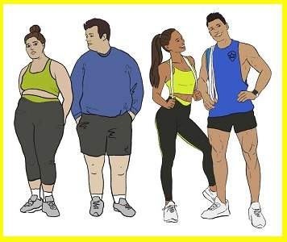
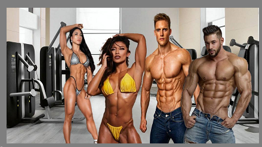
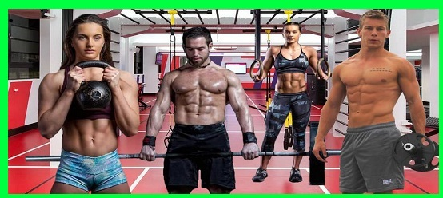
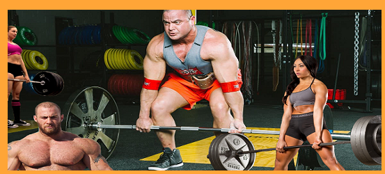
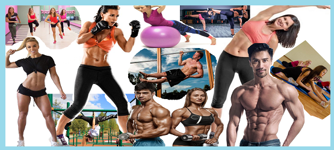

Системы тренировок
и питания
Индивидуальные программы
плюс обучение
Почему
тяжело похудеть?!!
Почему люди во всем мире толстеют? Почему диеты и
похудательные марафоны помогают не на долго?
Почему
люди срываются с диет режимов питания
и
тренировок?
Почему
большинство после похудения СРАЗУ откатывают назад, а
остальные со временем все равно возращаются к большому весу?
Как все
это исправить и добиться результата навсегда?
Вот
лишь несколько ошибок на вскидку:
- Нужно
понять, что процесс похудения, это ни жесткая дисциплина на
короткое время. А планомерная, постоянная работа не вызывающая
стресса
- Похудение нельзя
ставить целью. Это побочный эффект на пути к истиной цели
- Просто похудеть не достаточно и не
правильно. Нужно хотя-бы частичное выстраивание конкретной
композиции тела
- Нужен весьма конкретный пошаговый план
с конкретной конечной точкой как по результату так и по
времени (но не очень жесткий)
- Скопированый чей-то план вряд-ли
приведет к долгосрочному и успешному результату. Он должен
быть заточен под Вас, Ваши обстоятельства желания и результаты
- Самонадеянность: "Я все знаю, все
понимаю, все сам могу. По телевизору показывали. В интернете
видел. Друг, или подруга говорила....." А заканчивается все
так: "Без химии и стероидов ничего не возможно". (а
ведь Вы просто не знаете как....)
- Неуверенность в себе, обратная сторона
самонадеяности. Напротив, когда боитесь, что слишком сложно,
мне не под силу. Нет времени. Я не смогу себя заставить, либо
не смогу от чего-то отказаться. А ведь возможно и не
придется......
- И это лишь ничтожно малая часть от
того, что мешает Вам выглядеть так, как Вы хотите
Бывают разные цели, мечты, интересы
И каждому по вкусу своя форма, навыки и способности

БодиБИлдинг
|

кроссфит
|

пауэрлифтинг
|

воркаут, аэробика, тай-бо,
Фитбол, флекс и многое другое
|
Что такое индивидуальный подход?
Правила и плюсы индивидуального тренинга
Дело в том, что абсолютное большинство "тренеров" называющих себя "фитнес-тренерами", на самом деле являются инструкторами. И разница тут огромная. Примерно, как между врачом и медсестрой. Азы медицины довольно хорошо знакомы обоим. Но ставить диагноз, и назначать план лечения может только один из них. Более того, даже врачи имеют каждый свою узкую специализацию. 100% универсальных, знающих все, нет. Так и инструкторы по "фитнесу", хорошо знают азы тренировок и питания. Действительно хорошо. И они работают. Более того, они и в интернете в свободном доступе. Но почему люди продолжают толстеть? Да потому, что стандартные планы, созданы под идеальные, среднестатистические условия. И следовать им продолжительное время, большинство людей ни смогут ни физически, ни психологически. Но создать по-настоящему индивидуальный, гибкий план тренировок и питания учитывающий Ваши особенности: пол, возраст, состояние здоровья, режим работы, эмоциональное, материальное и даже семейное положение, сможет только настоящий специалист. Или даже несколько специалистов, совместными усилиями. Такие планы разрабатываются ни как временная мера, а как постоянный образ жизни, который не будет создавать слишком большого стресса при его исполнении.
Более того. На протяжении всего времени, что Вы будете участвовать в индивидуальной, абонентской программе коррекции своего тела, Вы будете не просто получать указания, что и как делать. Вас будут именно обучать, как подобный план составлять, менять, корректировать самостоятельно и в дальнейшем. Рекомендованная протяженность участия от 6 до 12 месяцев. Именно за этот период времени, Вы пройдете большинство возможных нюансов (стандартные будни, каникулы, отпуск, праздники, сезонные заболевания и пр.) и поймете как действовать в каждой из таких ситуаций. Вы узнаете ни только огромное разнообразие способов физической нагрузки и составления тренировочных программ, режимов питания и рационов, но и получите приемы работы со своим психологическим состоянием. Узнаете основы физиологии и биохимии процессов организма, которые помогут Вам понять, почему нужно поступать именно так. И как менять свою программу с сохранением максимально возможных результатов.
Еженедельная абонентская плата позволяет принять участие в программе большинству людей, без нагрузки на Ваш бюджет. И в случае, если Вас что-то ни устроит, выйти из программы в любой момент не боясь потерять свои деньги. Как если бы это был большой разовый платеж за какой-то обучающий курс. А постепенное, дозированное поступление информации позволит максимально комфортно применять получаемые знания на практике, для проверки ее пригодности под Ваши условия. За каждым абонентом закрепляется его личный куратор, который будет с Вами постоянно на связи, для решения всех возникающих вопросов и поддержки на Вашем пути.
Преимущества индивидуальных занятий при сравнении со стандартными по цене и качеству. Плюс разнонаправленность тренировок и питания.
Индивидуальный тренинг встречается ни часто. Даже нанимая тренера в тренажерном зале, ни каждый тренер будет заморачиваться подбором упражнений в соответствии Вашим антропометрическим данным. Например, одна из самых распространенных ошибок, когда рослым людям с длинными ногами, тренера упорно продолжают настаивать на классических приседаниях со штангой, как на незаменимом упражнении. И при этом ругаются, мол нельзя чтоб колени за носки выходили. В то время как для некоторых таких людей оно является абсолютно неподходящим, а порою и противопоказанным. Да и про колени с носками ни все однозначно. И это ни говоря уже о том, что никто ни спросит о Ваших интересах, какой тип тренировок Вы вообще предпочитаете. А если Вы этого сами не знаете, тогда попробовать провести разносторонние тренировки, чтобы методом проб подобрать, что именно Вам понравится. Ведь тренировки должны именно нравиться, если себя всегда заставлять, Вы вскоре не выдержите и бросите это дело. Также абсолютное большинство "тренеров" будет доказывать, что красивую форму можно сделать только в тренажерном зале. И отказываются браться работать с человеком, если он просит заниматься на дому например. Очень часто можно услышать что хорошей формы не добиться, если заниматься лишь с весом собственного тела. У нас специалисты говорят так: "если ты не знаешь как это делать, ни нужно говорить, что это не возможно, скажи честно, я не знаю как это делать". А сколько споров о том как правильно питаться... Нельзя есть после шести, откажитесь от мучного и сладкого. Разгрузочные дни. Кушать только самые полезные продукты, по заоблачным ценам. Использовать специальные спортивные добавки. Отказ от алкоголя и еще огромное количество запретов и рекомендаций в которых люди уже заблудились и не понимают, где же истина. Более того, что вообще на наш взгляд является неприемлемым, так это диета выбираемая по моде. Вчера все худели вот так... и это работало. Но сегодня вдруг это уже ни правильно. Сегодня нужно по другому. И этой глупостью даже медийные личности людей пичкают. Типа быть в тренде. И каждый "тренер" будет Вам просто впихивать тот способ, что использует сам, не важно, подходит это Вам, или нет. Но ведь у него быть в форме, это его работа. А у Вас на это ни так много времени. И возможности каждый день с утра до вечера проводить в зале нет. Готовить себе отдельно из особых продуктов совсем ни просто, когда в семье из нескольких человек лишь Вас касается, или волнует проблема Вашего веса. При этом стоимость одной такой тренировки (в среднем по РФ), со среднестатистическим тренером примерно 500 рублей. В особо небогатых населённых пунктах 300-350 рублей. Тренера классом по выше, как правило, имеющие спортивные достижения, от 800 до 2000 рублей за тренировку, зависит чаще от титулованности, нежели от знаний и опыта реальной работы с обычными людьми. У особо титулованных тренеров, которых знают уже массы. Являющихся медийными личностями, стоимость одной тренировки, или даже просто консультации, доходит до нескольких десятков тысяч рублей. Но тут уже к ним идут на самом деле не из-за особых знаний, а из-за пафосности. Представьте какого это, сказать что мой тренер...... И назвать фамилию чемпиона, которого вся страна знает. Вот только возводить их знания на пьедестал тоже сильно не стоит. Ведь быть такими, их работа. И у них совсем иные возможности в тренировках, питании и образе жизни. При этом большинство таких титулованных спортсменов-тренеров, готовясь к соревнованиям, сами нанимают в тренеры еще более высоко титулованных спортсменов, или профессиональных СПОРТИВНЫХ тренеров (А спортивные тренеры, это вообще иной мир. Там речи про здоровье нет). Но как ни странно очередной титул повысит стоимость их часа и количество клиентов. Итак, если мы возьмем нижний средний показатель цены в 500 рублей. В среднем от двух до четырех тренировок в неделю (чаще три-четыре тренировки). То мы получим примерную стоимость занятий от 1000 до 2000 рублей в неделю. При стоимости 1000-2000 рублей за тренировку, это порядка 3000-6000 рублей в НЕДЕЛЮ! При этом назвать этот тренинг индивидуальным можно с большой натяжкой. "Wellness Fitness Club" предлагает обучение действительно индивидуальным программам тренировок и питания, нацеленных на обычных людей, с обычными, ежедневными, бытовыми задачами. С постоянным кураторством, поддержкой, ответами и разъяснениями по точно такой же средне-рыночной цене всего 1500 рублей в неделю. За те же деньги (хотя это нижний порог средне рыночной стоимости) Вы получите намного больше. Вы ни просто узнаете как можно питаться и заниматься подобрав тот способ, что подходит именно Вам. Вы поймете почему именно нужно так поступать. Узнаете как устроен Ваш организм, психология пищевого поведения. И многое другое, при этом ни ломая, полностью, привычный уклад своей жизни. А адаптировать эти знания и навыки вплетая их в свои будни, учась получать от этого удовольствие. Мы не говорим, что Вам вообще ничего не придется делать. Нет! Мы говорим о том, что Вы научитесь делать то, что нужно именно Вам! Ведь похудение на самом деле ни является самой целью. Похудеть хотят для чего-то (кого-то), или из-за чего-то (кого-то). Чтоб жизнь стала в чем-то лучше, легче, интереснее, счастливее. Поэтому мы и будем работать с психоэмоциональным состоянием, в том числе. Так давайте сделаем жизнь лучше и интереснее! Единственный минус в нашем индивидуальном подходе, это сильно
ограниченное количество мест для участников, Ведь один тренер может
взять на индивидуальное обучение, ограниченное количество учеников. В
случае если Вы захотите вступить в наш клуб, но мест уже ни будет, то
при подаче заявки Вы будете добавлены в лист ожидания и в случае
появления новых мест мы свяжемся с Вами в порядке очереди. Так же тренер
имеет право отказать в принятии в свои ученики без объяснения причин,
либо отказать в дальнейшем обучении после исполнения обязательств по уже
оплаченому периоду.
Единые цена и качество.
Вам не надоело когда на курсах и тренингах Вам предлагают низкокачественное обучение за 5000, среднекачественное за 15000 и самое крутое высококачественное за 40, 50 и даже 90 и более тысяч рублей. (При этом всем продается один и тот же урок. Никаких индивидуальных занятий там нет.) Мол тех кто не может себе позволить большего мы сделаем капельку богаче, умнее, или капельку стройнее. Тем у кого побольше денег мы поможем стать еще более богатыми, умными, или стройным чем первым. Ну а самых щедрых клиентов мы сделаем миллионерами, гениями, высококлассными специалистами, или превратим в фитнес-моделей. Зависит от тематики курса. Тоесть за меньшие деньги Вам только приоткроют завесу тайн, хотите реальные знания? Платите! И это справедливо, что знания стоят денег. Но спекулировать изначально недоделанным продуктом....?! В общем пусть это будет на их совести. Мы же не позволяем себе осознанно не додать качества. Поэтому никаких Light, VIP, PRO, Gold, Premium и т.д. пакетов у нас нет. У нас для всех один максимально доступный тариф! И для всех, одинаково, максимально высокое качество! Другого мы просто себе не позволяем.
Ценовая политика членства в "Welnes Fitnes Club". Стоимость вступления, участия и всего бучения для всех одинакова. Оплата проходит по неделям, один платеж в неделю, либо один платеж раз в две недели. Участие в обучении проходит по предоплате. Стоимость одной недели 1500 рублей. Тоесть при оплате раз в неделю, Вы оплачиваете предстоящую неделю, раз в две недели предстоящие две недели. При оплате двух недель авансом, Вы получаете скидку 10%. Исключение составляет первая неделя вступления в клуб, ее стоимость составляет 3000 рублей. Это связано с усиленой работой и дополнительными расходами на первом этапе по сбору и анализу информации для составления стратегии и плана действий. В случае ПОВЫШЕНИЯ стоимости участия для новых членов клуба, на действующих членов клуба данное повышение распространяться не будет, стоимость останется прежней до окончания членства. При этом мы гарантируем что качество оказываемых услуг не пострадает. В случае же снижения стоимости абонентской платы для новых членов клуба, сниженная цена будет действовать и для действующих членов клуба. Таким образом мы гарантируем всегда самую выгодную стоимость для действующих членов клуба.
Правила и порядок обучения. После сбора и анализа всей необходимой на первом этапе информации, составляется стратегия работы на первый период. С частотой примерно 3 раза в неделю Вы будете проходить уроки подготовленные для Вас куратором. Уроки делятся на уроки с общей информацией: анатомия, физиология, биохимия, диетологиятеория и нутрициология, теория тренировочных процессов и физической активности и т.д. И на уроки индивидуальные, подготовленные куратором специально для Вас в соответствии Вашим ситуациям, особенностям, целям и желаниям. Так же у Вас будет личный чат с куратором, в который Вы в любой момент можете обратиться с любыми вопросами. Время ответа, как правило, составляет от нескольких минут, до суток. Куратор так же будет проявлять инициативу для общения с Вами по своему усмотрению. Рекомендуемый срок обучения от 6-ти до 12- месяцев, зависит от Ваших достижений, способностей, скорости обучения. Дальнейшее участие в клубе, после 12-ти месяцев, рассматривается индивидуально.
Права и обязанности сторон. Администрация клуба гарантирует исполнение обязательств со своей стороны на период проведенной оплаты (одна, или две недели). Оплата проводится только по выставлению счета. Оплата без выставления счета не предусмотрена. Вы имеете право запросить выставление счета за одну, или две недели, по своему усмотрению. Вы можете каждый раз сами решать на какой период будет произведена оплата (на одну, или две недели). При запросе оплаты на две недели счет будет выставлен с учетом 10% скидки. Администрация клуба имеет право отказать в продлении членства без объяснения причин. После исполнения обязательств по оплаченому периоду. Но чаще всего отказ в членстве происходит из-за грубого, неуважительного общения с куратором и неисполнением совместно разработанного плана. Если куратор не видит результатов с Вашей стороны, значит Вы не следуете плану, что подрывает репутацию клуба. В этом случае куратор в одностороннем порядке имеет право отказать в продлении. Член клуба так же имеет право прекратить членство на любом этапе уведомив своего куратора и перестав оплачивать следующие периоды.
В самом верху страницы, любой посетитель данного ресурса может задать свой вопрос по тематике ресурса, или о платном обучении, отправив его на E-mail указаный в блоке рубрики "вопрос". Вопросы в данной рубрике задаются абсолютно бесплатно, поэтому ответы на них будут производиться по усмотрению консультантов ресурса, при наличии времени и возможности специалистов. Специалисты не обязаны отвечать на вопросы в даной рубрике. И делают это добровольно. Ответы будут приходить лично на Ваш E-mail с которого они были заданы. Ваши контакты, вопросы и иные личные данные конфиденциальны и не доступны для третьих лиц.
Примечание Уникальность данного ресурса, именно в исключительно личном контакте каждого посетителя со специалистами в теме фитнеса и питания. Абсолютная анонимность. Никто посторонний не увидет Ваших вопросов, мыслей, переживаний и страхов. Никто не посмеется и не оскорбит.
ОЧЕНЬ ВАЖНО!!! Для того чтобы получить максимально развернутый и исчерпывающий ответ, формулируйте максимально развернутый и конкретный вопрос. ЭТО ОЧЕНЬ ВАЖНО! УДИВЛЯЕТ КОГДА ЛЮДИ ЗАДАЮТ КОРЯВЫЙ СОКРАЩЕНЫЙ ВОПРОС, СУТЬ КОТОРОГО ДАЖЕ ПОНЯТЬ НЕВОЗМОЖНО. А ПОТОМ УДИВЛЯЮТСЯ ЧТО ИМ НИ ТАК ОТВЕТИЛИ.
Вопросы задаются ИСКЛЮЧИТЕЛЬНО В ПИСЬМЕННОЙ ФОРМЕ, если иного варианта не предложит сам консультант работающий с Вами.
Вопросы должны относиться к тематике освящаемой на данном ресурсе: фитнес, тренировки, похудение, набор массы, питание, диетология, здоровье, планирование, мотивация. Если Ваш вопрос выходит за рамки компетенции специалиста, Вы будуте честно уведомлены об этом.
Вся переписка строго конфеденциальна между Вами и специалистом работающим с Вашим вопросом, включая любые личные данные и контакты. Никакие третьи дица доступа к ней не имеют.